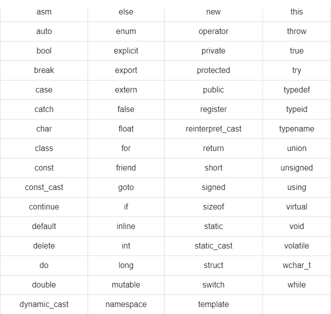

When we consider a C++ program, it can be defined as a collection of objects that communicate via invoking each other's methods. Let us now briefly look into what a class, object, methods, and instant variables mean.
Class - Objects have states and behaviors.
Example: A dog has states - color, name, breed as well as behaviors - wagging, barking,
eating. An object is an instance of a class.
Objects - A class can be defined as a
template/blueprint that describes the behaviors/states that object of its type support.
Methods - A method is basically a behavior. A
class can contain many methods. It is in methods where the logics are written, data is
manipulated and all the actions are executed.
Instance Varialbes - Each object has its
unique set of instance variables. An object's state is created by the values assigned to
these instance variables.
Let us look at a simple code that would print the words Hello World.
Let us look at the various parts of the above program −
• The C++ language defines several headers, which contain information that is either
necessary or useful to your program. For this program, the header < iostream> is
needed.
• The line using namespace std; tells the
compiler to use the std namespace. Namespaces
are a relatively recent addition to C++.
• The next line '// main() is where program
execution begins.' is a single-line comment
available in C++. Single-line comments begin with // and stop at the end of the
line.
• The line int main() is the main function
where program execution begins.
• The next line cout << "Hello World" ;
causes the message "Hello World" to be displayed on the screen.
• The next line return 0;
terminates main( )function and causes it to return the value 0 to the calling
process.
Let's look at how to save the file, compile and run the program. Please follow the steps
given below −
• Open a text editor and add the code as above.
• Save the file as: hello.cpp
• Open a command prompt and go to the directory where you saved the file.
• Type 'g++ hello.cpp' and press enter to compile your code. If there are no errors
in your
code the command prompt will take you to the next line and would generate a.out executable
file.
• Now, type 'a.out' to run your program.
• You will be able to see ' Hello World ' printed on the window.
Make sure that g++ is in your path and that you are running it in the directory containing file hello.cpp.
In C++, the semicolon is a statement terminator. That is, each individual statement must be ended with a semicolon. It indicates the end of one logical entity. For example, following are three different statements −
A block is a set of logically connected statements that are surrounded by opening and closing braces. For example −
C++ does not recognize the end of the line as a terminator. For this reason, it does not matter where you put a statement in a line. For example −
is the same as:
A C++ identifier is a name used to identify a variable, function, class, module, or any other
user-defined item. An identifier starts with a letter A to Z or a to z or an underscore (_)
followed by zero or more letters, underscores, and digits (0 to 9).
C++ does not allow punctuation characters such as @, $, and % within identifiers. C++ is a
case-sensitive programming language. Thus, Manpower and manpower are two
different
identifiers in C++.
Here are some examples of acceptable identifiers −
The following list shows the reserved words in C++. These reserved words may not be used as constant or variable or any other identifier names.
A few characters have an alternative representation, called a trigraph sequence. A trigraph
is a three-character sequence that represents a single character and the sequence always
starts with two question marks.
Trigraphs are expanded anywhere they appear, including within string literals and character
literals, in comments, and in preprocessor directives.
Following are most frequently used trigraph sequences−
All the compilers do not support trigraphs and they are not advised to be used because of their confusing nature.
A line containing only whitespace, possibly with a comment, is known as a blank line, and C++
compiler totally ignores it.
Whitespace is the term used in C++ to describe blanks, tabs, newline characters and
comments. Whitespace separates one part of a statement from another and enables the compiler
to identify where one element in a statement, such as int, ends and the next element begins.
Statement 1
In the above statement there must be at least one whitespace character (usually a space) between int and age for the compiler to be able to distinguish them.
Statement 2
In the above statement 2, no whitespace characters are necessary between fruit and =, or between = and apples, although you are free to include some if you wish for readability purpose.